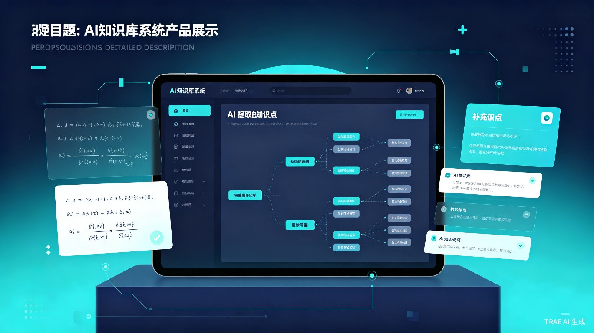

AI驱动的智能知识库系统 —— 让每一道题都成为知识升级的阶梯

学生在刷题时往往只关注答案对错，却忽略了题目背后的知识体系，导致同一类题目反复出错，学习效率低下。传统错题本只能记录错题，无法自动关联知识点和进行知识补全。
作为学生，我深刻体会到"题海战术"的弊端：做了很多题，但知识体系始终是碎片化的。我希望有一个AI助手，能在分析每道题时自动提取知识点、发现知识盲区、并主动补充相关内容，让学习从"被动刷题"变成"主动构建知识体系"。
智识引擎是一个Web端AI知识库系统，用户输入或拍照上传题目后，系统自动分析题目、提取核心知识点、生成知识图谱，并智能推荐补充知识点，帮助用户构建完整的知识网络。
中学生、大学生、考研/考证人群，以及任何需要系统性学习某一学科知识的自学者。
课后复习错题、考前知识梳理、学习新知识时的知识关联、查漏补缺时的针对性学习。
智识引擎通过AI自动分析题目并提取知识点，将原本需要30分钟手动整理的内容压缩至3秒自动生成。知识图谱的可视化让用户一眼看清自己的知识结构，复习时能够精准定位薄弱环节，学习效率提升10倍以上。
教育公平是社会公平的重要基础。智识引擎让优质的学习方法（知识图谱构建、错题归因分析）不再依赖昂贵的私教或名校资源，任何有网络的学生都能免费使用。长期来看，这有助于缩小教育差距，让更多学生掌握科学的学习方法，从根本上提升学习能力和知识素养。
flowchart LR
A[用户输入题目] --> B[AI题目分析]
B --> C[提取核心知识点]
C --> D[生成知识图谱]
D --> E[检测知识盲区]
E --> F[智能补充知识点]
F --> G[构建完整知识网络]
G --> H[个性化复习推荐]
支持文字输入和拍照识别，AI自动理解题意，识别题目类型和考查方向。
基于大语言模型，从题目中精准提取涉及的所有知识点，并标注难度等级。
将提取的知识点以可视化图谱呈现，展示知识点之间的关联和依赖关系。
对比用户已有知识库，自动发现缺失的前置知识和关联知识点。
针对检测到的知识盲区，智能推荐补充学习内容和相关练习题。
用户每解决一道题，知识库就升级一次，形成个人专属的知识成长路径。
前端采用React + TypeScript构建响应式Web界面，后端使用Node.js服务层对接大语言模型API（如GPT-4/Claude）。知识图谱使用图数据库Neo4j存储，支持复杂的关系查询。题目识别集成OCR技术，支持手写体和印刷体混合识别。
flowchart TB
subgraph 前端层
A[React Web应用]
B[知识图谱可视化]
C[题目输入组件]
end
subgraph 服务层
D[Node.js API网关]
E[题目解析服务]
F[知识图谱服务]
end
subgraph AI层
G[大语言模型 API]
H[OCR 识别服务]
end
subgraph 数据层
I[(Neo4j 图数据库)]
J[(PostgreSQL 用户数据)]
end
A --> D
C --> H
D --> E
D --> F
E --> G
F --> I
D --> J
初期通过教育类KOL和校园大使进行种子用户推广，中期与在线教育平台合作接入，长期目标是成为学生学习流程中的标配工具。
"智识引擎的愿景是：让每一次解题都成为知识网络的一次升级，让每一个学习者都能拥有属于自己的AI知识导师。"